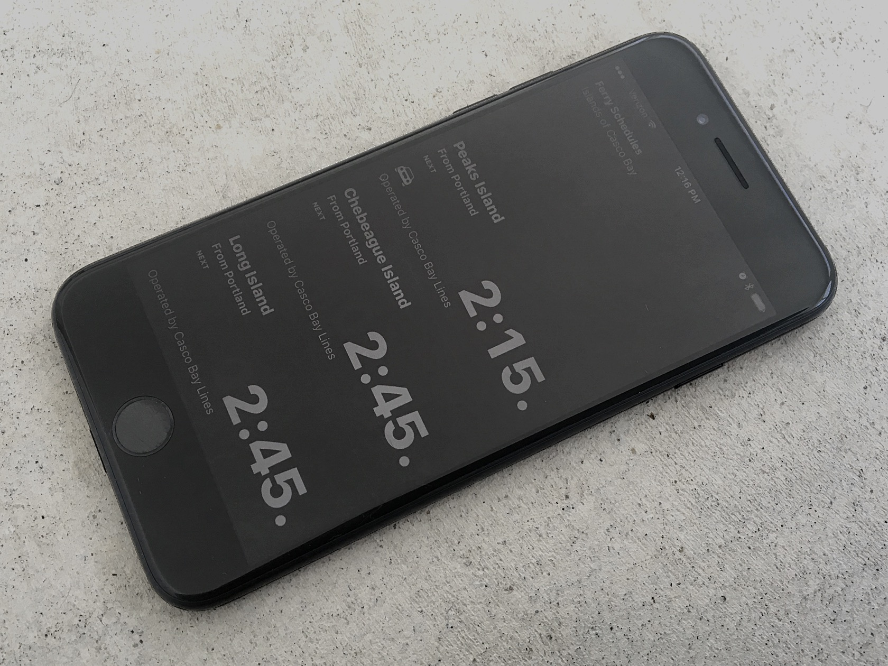
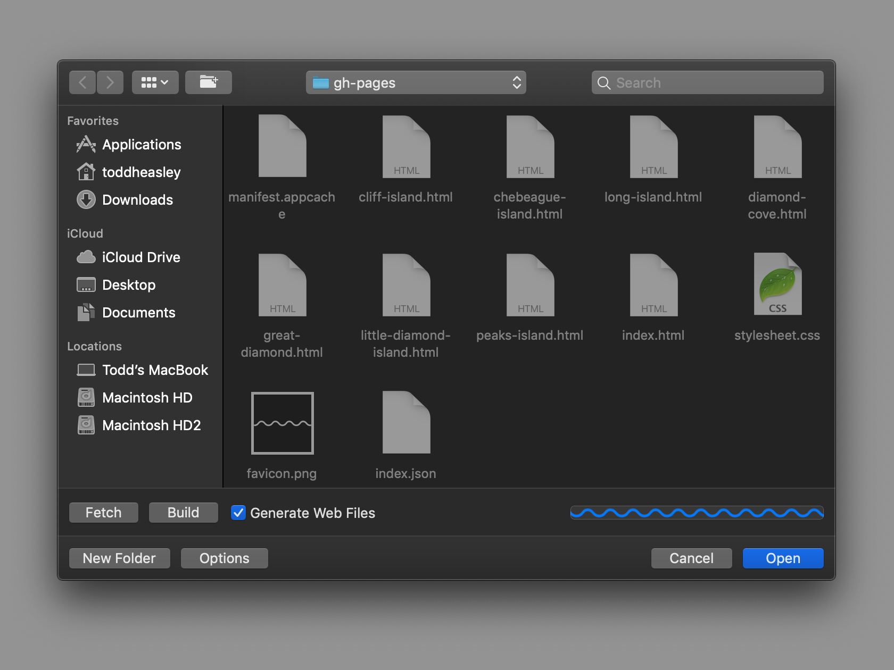

<!DOCTYPE html>
<title>Boats - Todd Heasley</title>
<meta name="viewport" content="initial-scale=1.0">
<meta name="twitter:card" content="summary_large_image">
<meta name="twitter:site" content="@toddheasley">
<meta name="twitter:title" content="Boats">
<meta name="twitter:description" content="Casco Bay Lines ferry schedules for iPhone, iPad and Apple Watch">
<meta name="twitter:image" content="boats.jpg">
<meta name="apple-itunes-app" content="app-id=1152562893">
<link rel="apple-touch-icon" href="toddheasley.png">
<link rel="stylesheet" href="toddheasley.css">
<header>
    <h1><a href="index.html">Todd&nbsp;Heasley</a></h1>
</header>
<main>
    <h1>Boats</h1>
    <h2><time>2015 - 2019</time></h2>
    <figure><a href="boats.png"></a> <figcaption>Boats 3.0</figcaption></figure>
    <p><a href="https://cascobaylines.com">Casco Bay Lines</a> ferry schedules for iPhone, iPad and Apple Watch</p>
    <p><a href="https://itunes.apple.com/us/app/apple-store/id1152562893"></a> <a href="https://github.com/toddheasley/boats"></a></p>
    <figure><a href="boats2.jpg"></a> <figcaption>Boats 2.0</figcaption></figure>
    <figure><a href="boatsedit.png"></a> <figcaption>BoatsEdit</figcaption></figure>
</main>
<footer>
    <p><a href="https://twitter.com/toddheasley">@toddheasley</a></p>
</footer>